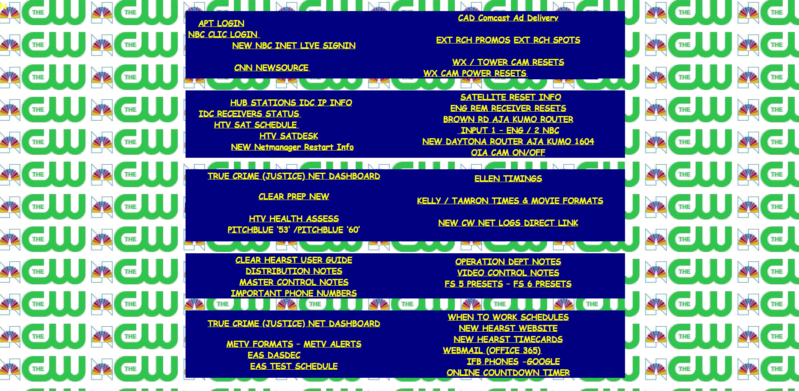
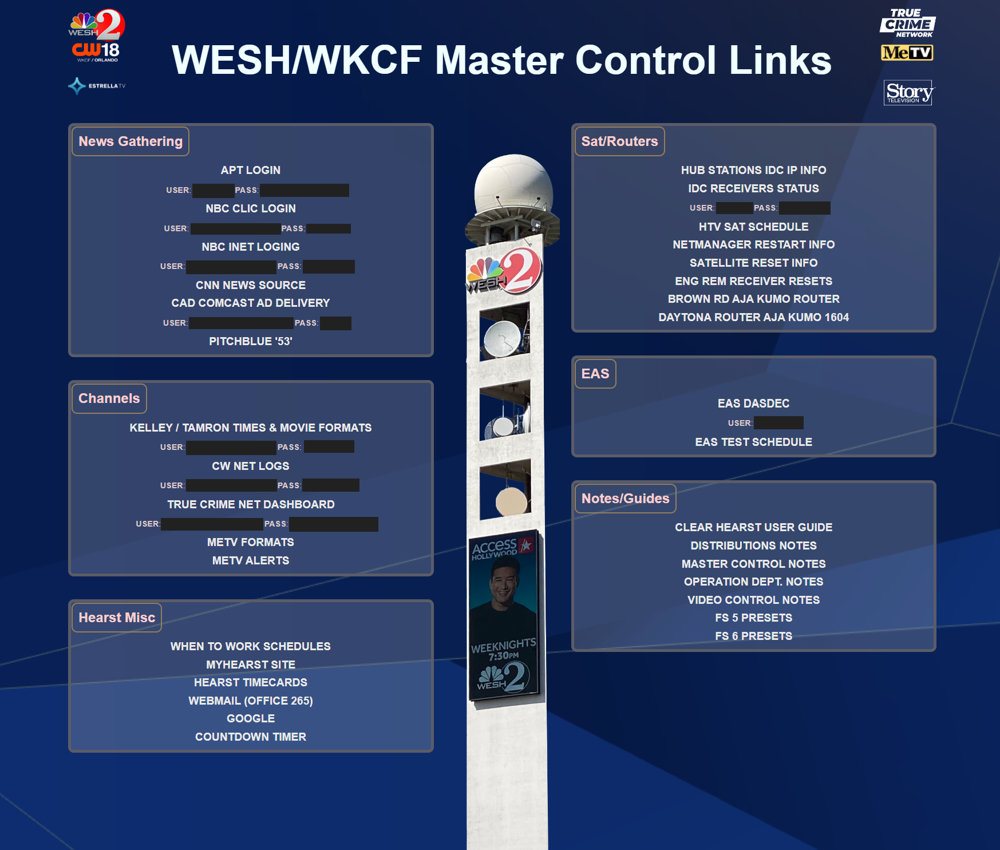

Enhancing the Master Control Links Webpage
In this project, I focused on updating and improving the existing webpage used by master control operators to access various credentials and resources. The previous design was simple and had a repetitive background, which made it less visually appealing and harder to navigate.

Key Improvements Made:
- Visual Design Overhaul: I replaced the old background with a visually engaging image featuring the station's iconic tower, creating a more professional and modern look. This change also enhances brand identity and provides a more intuitive visual experience for users.
- Organized Content Layout: The new design organizes information into clearly defined sections such as News Gathering, Channels, Sat/Routers, EAS, and Notes/Guides. This structured layout makes it easier for operators to locate the specific links and credentials they need quickly.
- Use of Borders and Boxes: I utilized bordered boxes around each content section to improve readability and separate different categories visually. This helps reduce visual clutter and makes the information more digestible.
- Enhanced Readability: By opting for dark text on a lighter background, the new design improves readability, ensuring that users can access information without straining their eyes.
- Consistent Branding: The use of station logos and a consistent color scheme aligns the page with the overall station branding, which helps in creating a cohesive visual identity.

These changes collectively enhance user experience, making the webpage not only more functional but also visually pleasing, which ultimately helps operators perform their tasks more efficiently.
Connor Panso